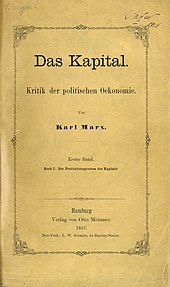

Marx continued to write articles for the New York Daily Tribune as long as he was sure that the Tribune's editorial policy was still progressive. However, the departure of Charles Dana from the paper in late 1861 and the resultant change in the editorial board brought about a new editorial policy.[157] No longer was the Tribune to be a strong abolitionist paper dedicated to a complete Union victory. The new editorial board supported an immediate peace between the Union and the Confederacy in the Civil War in the United States with slavery left intact in the Confederacy. Marx strongly disagreed with this new political position and in 1863 was forced to withdraw as a writer for the Tribune.[158] In 1864, Marx became involved in the International Workingmen's Association (also known as the First International),[125] to whose General Council he was elected at its inception in 1864.[159] In that organisation, Marx was involved in the struggle against the anarchist wing centred on Mikhail Bakunin (1814–1876).[137] Although Marx won this contest, the transfer of the seat of the General Council from London to New York in 1872, which Marx supported, led to the decline of the International.[160] The most important political event during the existence of the International was the Paris Commune of 1871 when the citizens of Paris rebelled against their government and held the city for two months. In response to the bloody suppression of this rebellion, Marx wrote one of his most famous pamphlets, "The Civil War in France", a defence of the Commune.[161][162] Given the repeated failures and frustrations of workers' revolutions and movements, Marx also sought to understand and provide a critique suitable for the capitalist mode of production, and hence spent a great deal of time in the reading room of the British Museum studying.[163] By 1857, Marx had accumulated over 800 pages of notes and short essays on capital, landed property, wage labour, the state, and foreign trade, and the world market, though this work did not appear in print until 1939, under the title Outlines of the Critique of Political Economy.[164][165][166] In 1859, Marx published A Contribution to the Critique of Political Economy,[167] his first serious critique of political economy. This work was intended merely as a preview of his three-volume Das Kapital (English title: Capital: Critique of Political Economy), which he intended to publish at a later date. In A Contribution to the Critique of Political Economy, Marx began to critically examine axioms and categories of economic thinking.[168][169][170] The work was enthusiastically received, and the edition sold out quickly. [171]
